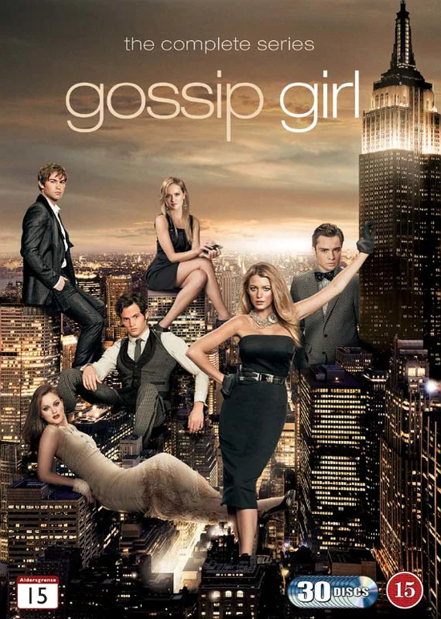

A primeira temporadaPor: valentina acordi
Em Gossip Girl, um grupo de jovens ricos e privilegiados da elite de Manhattan são perseguidos por uma blogueira anônima que ameaça expor os seus piores segredos em um site na internet.
Vou falar sobre a serie Gossip girl

A primeira temporadaPor: valentina acordi
Em Gossip Girl, um grupo de jovens ricos e privilegiados da elite de Manhattan são perseguidos por uma blogueira anônima que ameaça expor os seus piores segredos em um site na internet.